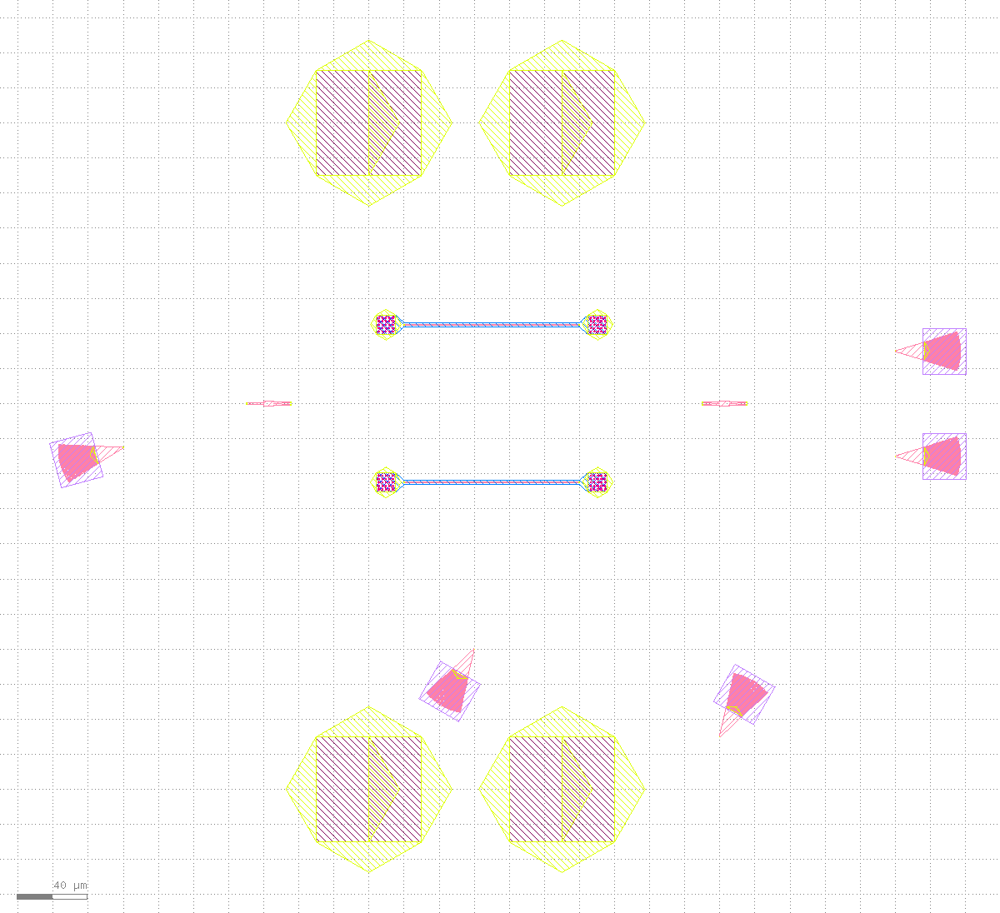
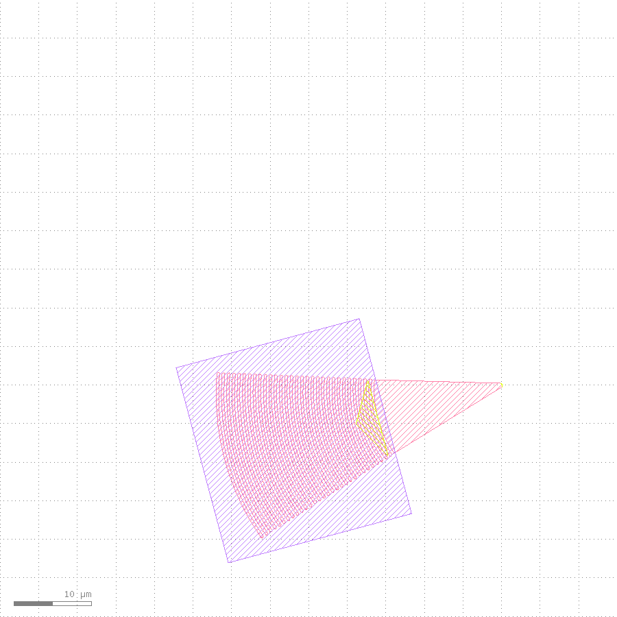
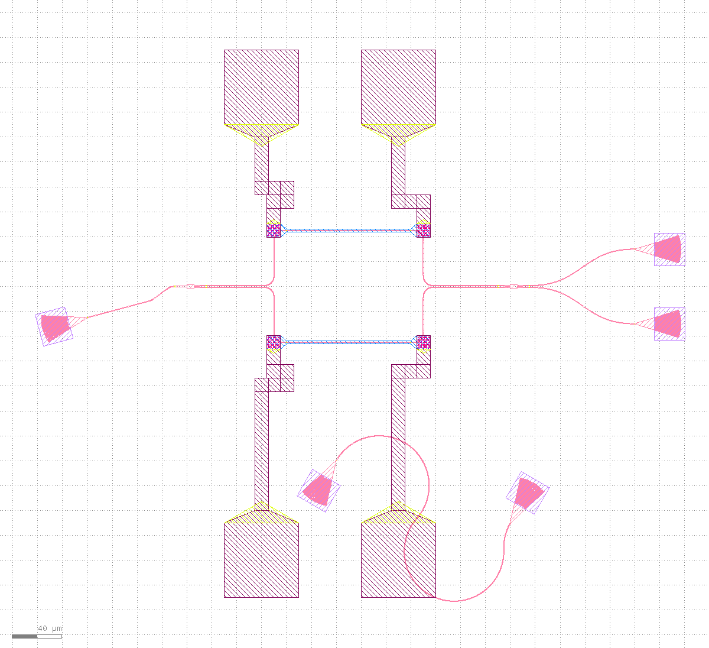
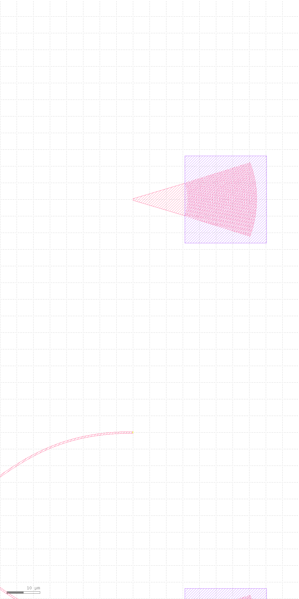
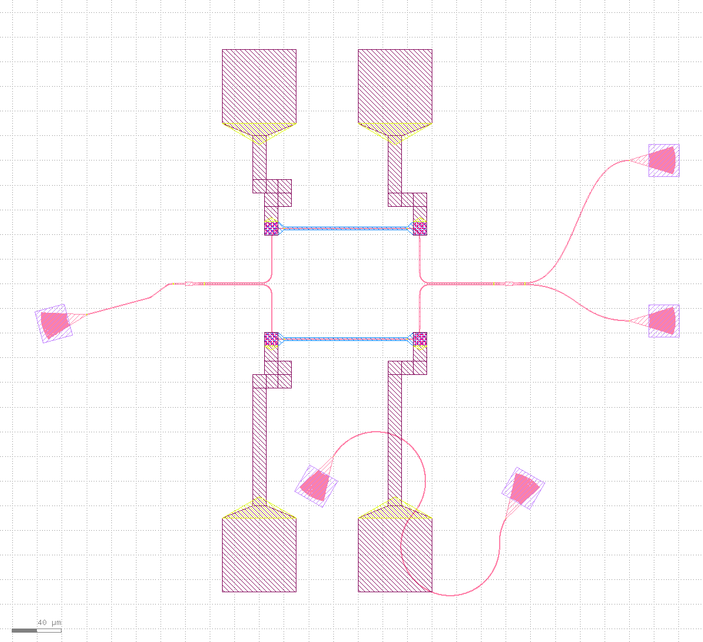
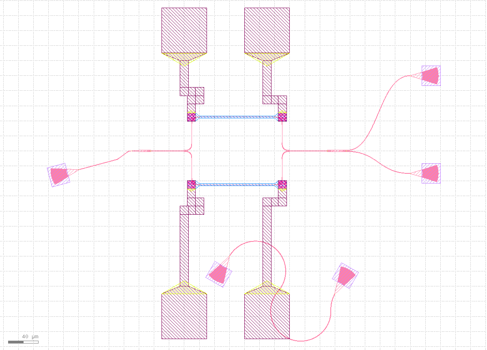
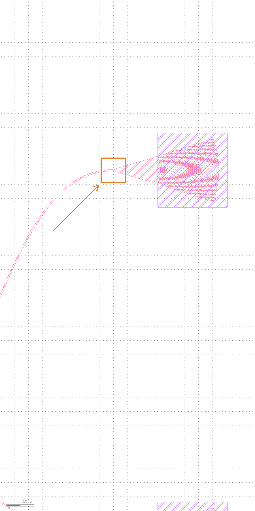

Prerequisites
- KLayout running with the klink plugin loaded (RPC port defaults to
8765). - This tutorial needs klink AND gdsfactory in the same interpreter -- klink is an RPC client, and the geometry gets built with gdsfactory in this Python process before being pushed to KLayout. Two ways to get there:
- one venv, both libs (simplest):
pip install "klayout-klink[photonics]"(= klink + a tested gdsfactory version line,>=9.0,<10); - gdsfactory already lives in another venv:
<that-venv>/python -m pip install klayout-klink(klink is pure Python), then run this tutorial's script from that venv.
- one venv, both libs (simplest):
- Scaffold a project and enter it:
klink init my-chip && cd my-chip-- the full script ispython example_template/photonics/gf_mzi_module.py --port <session-port>. In a repo checkout the equivalent ispython -m examples_klink.public.demos.photonics.gf_mzi_module --port <session-port>.
gf.Port's center unit contract has changed across gdsfactory versions, and that shortcut's real consequence is 1000x-off geometry. [photonics] installs a CI-tested version; if you must use a different gdsfactory, expect to adjust the script, not klink.1One call takes over the whole module
The script's "user part" (build_user_module()) is plain gdsfactory code -- no KLayout involved yet: a 1x2 MMI splitter -> two thermal phase-shifter arms (the bottom one mirror_y()-ed, deliberately awkward) -> a 2x2 MMI combiner -> two laterally offset output grating couplers (GCs), plus a tilted 15-degree input GC (unreachable for a Manhattan router), a fiber-loopback GC pair at arbitrary headings, and four pads for the heaters. The script routes 6 Manhattan optical connections itself with gf.routing.route_bundle -- these get discarded wholesale and redrawn per-net once klink takes over; the script's own routing only exists so the gdsfactory code stands on its own.
The actual takeover is one call:
from klink import KLinkClient
from klink.domains.photonics.gf_import import import_gf_component
from examples_klink.public.demos.photonics.gf_mzi_module import build_user_module, CELL, OPTICAL_LAYER
component = build_user_module() # plain gdsfactory, no KLayout involved yet
with KLinkClient(port=PORT).connect() as client:
result = import_gf_component(
client, component, cell=CELL, route_layer=OPTICAL_LAYER, route=False)
# result: {"ok": True, "nets": [...6...], "instances": 13, "device_cells": [...5...], ...}This one call does three things at once -- per docs/AGENT_TOOL_DESIGN.md's "one user intention = one call" rule: (1) batch-places 13 device instances (splitter, combiner, two phase-shifter arms, 5 GCs, 4 pads -- 5 unique device cells) into KLayout; (2) collapses the script's own optical routing into device-level nets (6 of them), persisted to .klink/specs/GF_MZI_MODULE.nets.json; (3) because route=False was passed, this step only marks every harvested port (57 of them) so the wiring can be inspected -- it draws no routes yet. Passing route=True (the demo's default with no flags) would route in the same call; this tutorial splits it in two on purpose, to lay the state out for inspection.

import_gf_component(route=False): all 13 device instances are placed and every port is marked, but not a single route is drawn yet -- the script's own 6 Manhattan routes have already been discarded (the two "line-like" traces visible here are actually the MMI devices' own simplified geometry, not routes). Framed with view.zoom_box(bbox_um=[-150,-290,420,230]).max_hier_levels=1 -- any instance sitting right at that "hierarchy boundary" gets a "box + cell name" annotation drawn on top of its real geometry; with this many small devices packed close together those annotations overlap into unreadable text soup. No typed RPC exposes this display depth. Using exec.python to raise view.max_hier_levels to 4 (above the real hierarchy depth) plus view.update_content() to force a redraw makes the annotation disappear -- a pure display fix, zero geometry bytes changed: port.list/reroute() report numbers were checked identical before and after. Every screenshot below already has this fix applied.2Harvest ports: derived from live instance positions
The point made repeatedly in the photonics section and docs/GDSFACTORY_PDK_LOOP.md is clearest right here: ports are derived data, always recomputed from live instance positions, never a static annotation drawn once and frozen. Of all 57 ports, the tilted input grating coupler gc_in makes the point best -- the gdsfactory script rotate(195)s it to an awkward heading ("195 degrees" and "facing outward at 15 degrees" are the same fact stated two ways), completely unreachable for a Manhattan router, which is exactly why the script leaves it unrouted:
ports = client.call(
"port.list", {"cell": "GF_MZI_MODULE", "layer": "999/99", "sort": "name"}
).get("ports", [])
by_name = {p["name"]: p for p in ports}
gc_in_port = by_name["grating_coupler_elliptical1_o1"]
# {"center_um": [-80.0, -25.0], "orientation": 15.0, "net": ""}The port center [-80.0, -25.0] matches exactly what the gdsfactory script's gc_in.move((-80, -25)) placed, and the 15.0-degree orientation is correctly transformed from the device's own rotate(195) -- all through klink.domains.photonics.gf_import.harvest_gf_template_ports, which maps the gf port template (child-local coordinates) through each instance's LIVE transform into parent coordinates, never a hardcoded angle table. This step is a pure query -- it writes no geometry.

gc_in): the purple shape is the device's own outline after its 195-degree rotation; the pink triangle is the port marker re-harvested from the live instance, its orientation correctly following the device's rotation -- the exact precondition that lets Stage 3's router="all_angle" reach it. Framed with view.screenshot(bbox_um=[-145,-55,-65,25], width_px=900, height_px=900) (an 80x80 um square, no aspect-ratio expansion).3Extend the net table + one reroute() wires everything
The 6 optical nets collapsed during the takeover only cover the Manhattan part the script itself could route. The demo keeps adding to the SAME persisted net table -- three more kinds of connection -- before calling reroute() just once. This is the key design point of this net table: a net's style (which router, which layer) and a net's existence are two separate concerns, so every intent can be added first and routed once at the end:
from klink.domains.photonics.net_intent import NetTable, RouteStyle, reroute
table = NetTable.load("GF_MZI_MODULE")
# 1) Restyle the offset output GC nets to sbend (smooth S-curve, not two right-angle bends)
for entry in table.entries:
members = {entry["a"], entry["b"]}
if any(m.startswith("mmi2x2") and m.endswith(("_o3", "_o4")) for m in members):
entry["style"]["router"] = "sbend"
# 2) Add what a Manhattan router cannot reach: all_angle for the tilted GC, dubins for the loopback pair
table.add_pair("grating_coupler_elliptical1_o1", "mmi1x20_o1",
RouteStyle(router="all_angle", route_layer="1/0"))
table.add_pair("grating_coupler_elliptical2_o1", "grating_coupler_elliptical3_o1",
RouteStyle(router="dubins", radius_um=40.0, route_layer="1/0"))
# 3) Heater -> pad electrical nets, on the metal layer 49/0
metal = RouteStyle(router="electrical", route_layer="49/0", separation_um=12.0)
table.add_pair("straight_heater_metal_undercut0_l_e2", "pad0_e2", metal)
# ...the other 3 pairs follow the same pattern (2 electrodes per arm x 2 arms, paired to pads by x order)
table.save()
report = reroute(client, cell="GF_MZI_MODULE")
# {"ok": True, "routes": 12, "abutted": 0, "crossings": 0, "device_hits": 0}All 12 nets route in one pass: 6 imported optical nets (Manhattan, 2 of them restyled to sbend) + 1 all_angle (the tilted GC) + 1 dubins (the loopback pair) + 4 electrical (2 electrodes per arm across both arms -> 4 pads). ok=true, crossings=0, device_hits=0 -- these numbers match exactly what's on record on the examples page's gf_mzi_module card.

reroute() call: all 12 nets are drawn -- optical on 1/0 (pink), electrical on 49/0 (same color family, running between pads and heater electrodes). This is the baseline state for the drag-then-reconnect that follows.4Simulate a drag: make one route stale
In a real workflow this step is a human dragging with the mouse in the KLayout GUI. This tutorial has to reproduce that exact action honestly with no human present, which raises a real question: is there a typed RPC that repositions an already-placed instance? After checking klink_plugin/python/klink_server/methods/instance_m.py, the answer is no -- that module only exposes instance.insert / insert_many / insert_pcell / insert_pcell_many / query / delete, none of which mutate an existing instance's transform. A human dragging in the GUI is, under the hood, calling exactly the pya.Instance.dcplx_trans setter -- there's no higher-level klink RPC to prefer here, so this is a documented, justified exec.python escape hatch, not a shortcut around typed RPCs:
# All 5 grating coupler instances share the same child cell; gc_up is picked
# out by its live transform position, not by cell identity alone.
top_cell = layout.cell("GF_MZI_MODULE")
child_idx = layout.cell("GFDEV_grating_coupler_elliptical_2f9b04be").cell_index()
for inst in top_cell.each_inst():
if inst.cell_index != child_idx:
continue
t = inst.dcplx_trans
if abs(t.disp.x - 360.0) > 0.01 or abs(t.disp.y - 30.0) > 0.01:
continue # not gc_up -- skip the other 4 grating couplers
inst.dcplx_trans = pya.DCplxTrans(t.mag, t.angle, t.mirror,
t.disp + pya.DVector(0.0, 70.0))The component moved is gc_up (one of the offset output grating couplers, carrying a single net), shifted 70 um in +y from (360, 30) to (360, 100) -- open space above it, clear of any pad or other device's obstacle box. Only the instance's position changed -- no routing geometry and no net table entry was touched: the old sbend trace is still pinned to the old coordinates, and the port marker is still sitting at the old position too. This is exactly the real state right after a drag, before any re-route.
gc_up now sits alone at its new position in the top-right; the old sbend trace is still parked at the original coordinates, visibly dangling in empty space -- this is what "just dragged, not yet re-routed" looks like.
gc_up's new position -- the routing is visibly stale, no verification tool needed to see it.5reroute(): same call, reconnects from the new position
This is the whole point of this tutorial: fixing the stale routing uses the exact same function that established the baseline in Stage 3 -- photonics.reroute (the script's --reroute flag maps to this). It needs only the cell name; everything else comes from the persisted net table on disk:
from klink.domains.photonics.net_intent import reroute
report = reroute(client, cell="GF_MZI_MODULE")
# {"ok": True, "routes": 12, "abutted": 0, "crossings": 0, "device_hits": 0}reroute() first re-harvests ports (the same live-position-derived process from Stage 2 -- gc_up's port is now found sitting at its new coordinates), then re-routes every net per its stored RouteStyle. No device gets rebuilt, so your drag is preserved -- exactly the point the script's own docstring keeps making: re-running the whole script with no flag would rebuild from the gdsfactory source and snap every device back to its original spot, undoing your edit. --reroute is the path that keeps the edit and only re-wires.
gc_up has moved, the trace is still at the old coordinates.
gc_up's new position -- the component moved, and the wire followed; the other 11 nets did not shift by a single pixel.gc_up's new port coordinates -- same crop frame, Stage 5c to 5d is the single point this tutorial most wants to make.6Finish: overview + exact verification of where it landed
reroute() was the last geometry write; this step just confirms the result -- by coordinates, not by eye:
client.zoom_fit()
overview = client.screenshot(mode="base64", width_px=1200)
ports = client.call("port.list", {"cell": "GF_MZI_MODULE", "layer": "999/99", "sort": "name"})["ports"]
gc_up_port = next(p for p in ports if p["name"] == "grating_coupler_elliptical4_o1")
# {"center_um": [360.0, 100.0], "orientation": 180.0, ...} -- exactly the post-drag coordinates
view.zoom_fit): all 13 devices, 12 nets, and the post-drag gc_up, fully wired in one cell.
grating_coupler_elliptical4_o1 (gc_up's fiber port) -- port.list reports its current coordinates as [360.0, 100.0], exactly matching (360, 30) + (0, 70) = (360, 100) from the drag script, checked by coordinates, not by eye. This is also the proof that reroute() re-harvests from the LIVE instance position rather than replaying the script's original layout.Verify, don't just look
As the tutorials home page says: screenshots are for people, not proof of done. Here's the actual structured result from this run:
{
"import": {"ok": true, "nets": 6, "instances": 13, "device_cells": 5, "ports_marked": 57},
"baseline_reroute": {"ok": true, "routes": 12, "abutted": 0, "crossings": 0, "device_hits": 0},
"drag": {"cell": "GFDEV_grating_coupler_elliptical_2f9b04be", "target": "gc_up",
"from_to": [360.0, 30.0, 360.0, 100.0]},
"post_drag_reroute": {"ok": true, "routes": 12, "abutted": 0, "crossings": 0, "device_hits": 0}
}The two reroute() reports -- before and after the drag -- are identical field-for-field: routes=12 (matching the net table's full count), crossings=0, device_hits=0 -- meaning all 12 nets paired and routed successfully both times, with no crossings and no collisions with any device's obstacle box. These numbers match the public record on the examples page exactly -- 6 optical nets, 13/5 instances/device cells, 12 reroute routes, 0/0 crossings/device-hits -- this tutorial runs the same public path, nothing special was set up on the side.
Next steps
Try this path on your own gdsfactory script: keeping or removing any gf.routing.route_bundle call doesn't affect the takeover -- import_gf_component only cares about device instances and the connections collapsed between them, not how the script itself routed. Switching to your own PDK, the layers, stub convention, and cross-sections all come from your script or pdk.py -- klink itself ships no process layers. If you haven't read the first three yet, read them in order: "Step-by-step: drawing a Hall bar device" (the geometry-first basics), "Step-by-step: drawing an EBL wraparound nanodevice" (writefield obstacle avoidance), and "Step-by-step: drawing a neural electrode harness" (parametric generation + batch RPCs) -- this tutorial's reroute() loop shares the same "mark intent -> route -> verify" skeleton, just with the intent coming from gdsfactory instead of hand-written port.mark calls. Next up (a new batch) is the digital side: a full custom-device flow from netlist to place&route to live LVS. The full commands, dependencies, and public measured numbers are on the examples page's gdsfactory MZI takeover card; the full NetTable/RouteStyle/reroute field reference is in this repo's klink/domains/photonics/net_intent.py and the MCP reference · Photonics section.